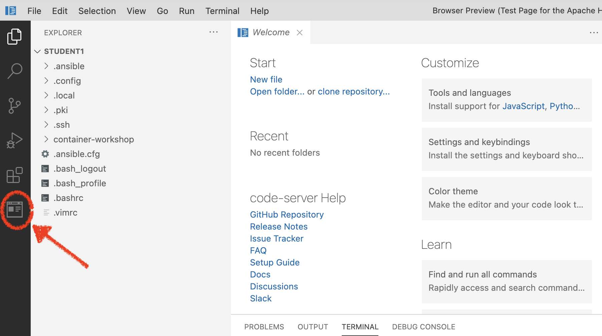

Setup
5 MINUTE EXERCISE
1. Introduction to Code Server
You will have received a login page like below to register for the workshop. Once registered you will receive username and password where you have been given access to a RHEL 8 virtual machine.
Your access to the machine will be mediated by code-server: a browser based community version of Visual Studio Code.
Let’s take a moment to familiarize yourself with the environment
2. Open code server
Once you have entered your password, you will be greeted with the code-server UI with your RHEL user’s (%USER%) home directory.

3. Open Terminal
Among other things, your code-server gives you command line access to your RHEL instance. You can open the terminal by using CTRL+J (or CMD+J on a Mac)
The first time you open it, you will find your terminal at the bottom (right) of the screen.

At some points during the exercises you will need two screens and from the dropdown menu you can elect to have split terminals.
4. Issuing Terminal Commands
Just to see that you are logged into the server, issue the following command
|
The first time you try to copy and paste the commands below your browser may prompt you with a window like this: 
Figure 3. Chrome alert pop-up
Please click on |
whoami%USER%Next check the distribution of Linux that is being run:
cat /etc/os-releaseNAME="Red Hat Enterprise Linux"
VERSION="8.4 (Ootpa)"
ID="rhel"
ID_LIKE="fedora"
VERSION_ID="8.4"
PLATFORM_ID="platform:el8"
PRETTY_NAME="Red Hat Enterprise Linux 8.4 (Ootpa)"
ANSI_COLOR="0;31"
CPE_NAME="cpe:/o:redhat:enterprise_linux:8.4:GA"
HOME_URL="https://www.redhat.com/"
DOCUMENTATION_URL="https://access.redhat.com/documentation/red_hat_enterprise_linux/8/"
BUG_REPORT_URL="https://bugzilla.redhat.com/"
REDHAT_BUGZILLA_PRODUCT="Red Hat Enterprise Linux 8"
REDHAT_BUGZILLA_PRODUCT_VERSION=8.4
REDHAT_SUPPORT_PRODUCT="Red Hat Enterprise Linux"
REDHAT_SUPPORT_PRODUCT_VERSION="8.4"5. Local Browser
Your code-server instance also has a chromium based browser installed (as a VSCode extension). This will allow us to view html files and connect to VM local services that are not otherwise exposed to the internet at large.
Note: This is not a full browser and sometimes closing and re-opening may be needed to refresh or change URLs.
-
To open the Browser Preview, click the browser preview button on the panel on the left
 -
This will open a nested browser on the right side of the screen.
 Figure 4. Just your average web browser
Figure 4. Just your average web browser -
Feel free to type in the address of your favorite website to show that it’s just a typical (chrome-based) web browser
|
RHEL Web Console (Cockpit) The RHEL web console is a Red Hat Enterprise Linux 8 web-based interface designed for managing and monitoring your local system, as well as Linux servers located in your network environment. In today’s lab you may also like to examine containers with the console. To enable cockpit you simply enable it as a service then open the local browser to localhost:9090, and log in as your (non-root) user by providing the username and password. For example if you are student10 then login with student10 and your password that you have been assigned. The video below gives you an introduction as to how you can work with containers through the console. |